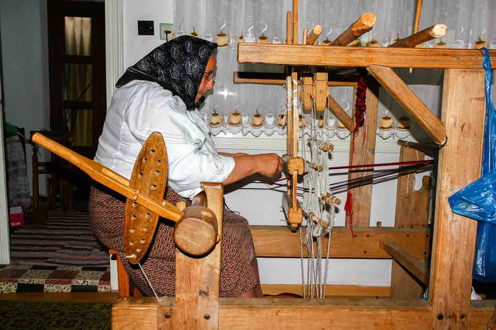
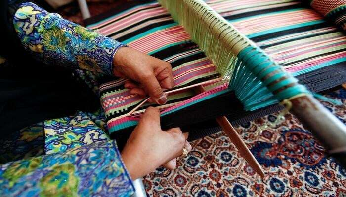

Weaving — Patterns of the Past
Weaving is one of the oldest crafts in Romanian culture. The traditional looms of Maramureș and Transylvania bring together wool, cotton, and patience to create colorful rugs, belts, and fabrics that speak the language of heritage.

